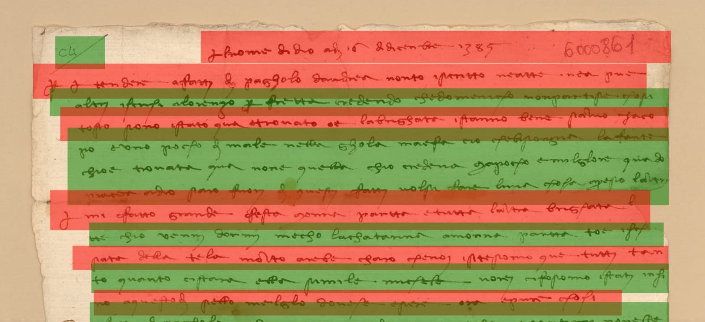

Activities planned within the CHANGES project
- Enhancement of the international quality standards for the Digital Imaging and Preservation of bookrelated sources (IFLA and FADGI), by promoting whole or selective Reflectance Transformation Imaging (RTI) on manuscripts, fragments, printed books, documents and image sources and fostering the adoption of international standards (such as IIIF); conclusion of F.A.I.R.-compliant agreements with national and international, public and private CH institutions.
- Setting up of open-source Web environment for the automated recognition (HTR and OCR) of the layouts and the characters of the textual sources; feeding the HTR engines for automated recognition of linguistic features and loci critici for the digital recensio.
- Creation of computational philology platforms in order to realize digital libraries and scholarly editions encoded in XML-TEI markup standard. These environments will be developed by aggregating DSLs, to ensure codicological, palaeographic, linguistic and textual enrichment of the primary sources.
- Linguistic heritage documentation and promotion, plurilingual texts valorization, in variable genres, in Italian archives. Digital technologies mapping and application for tangible and intangible linguistic heritage.
- Network and activity planning, archival data collection and research planning, communication campaign.
- Research protocols implementation of technological tools, pilot research studies, knowledge transfer, education activities planning, young researchers training. Months 25-36 Data transfer, results transfer, promotion activities, research products diffusion, young researchers’ empowerment, start-up activities.
- Digital technologies empowerment to document and promote intangible linguistic heritage. Innovative application of technologies for research and scientific promotion, in relation to linguistic and cultural intangible heritage -
- Network and activity planning, Digital technologies mapping and application for intangible linguistic heritage, communication campaign.
- Innovative technologies empowerment for research and scientific promotion, in relation to the legacy of linguistic and cultural heritage, pilot research studies, knowledge transfer, education activities planning, young researchers training.
- Knowledge and technical skills transfer, promotion activities, research products diffusion, young researchers’ empowerment, start-up activities.
Activities planned within the H2IOSC project
The platform will provide a range of services and tools, including:
- An environment for depositing and displaying digital images of mss.
- A set of procedures to support the description of mss.
- A set of innovative procedures and tools to support mss. and printed texts (e.g. incunabula) transcription activities, also with automatic or semi-automatic approaches based on AI, Deep and Machine Learning (supported by the DARIAH AI Hub in Naples, see WP4 H2IOSC)
- Software for the treatment of images of mss. for use in critical editions (e.g. EVT and IIIF).
- Software for automatic or semi-automatic collation of variants of witnesses, also using innovative approaches based on AI, Deep and Machine Learning (supported by the DARIAH AI Hub in Naples, see WP4).
- Software for the lexicography of variants for antique italian texts.
- Tools for geo-referencing historical data, to be applied to lexical or grammatical atlases.
